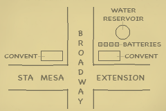

|
j
a v a s c r i p t |
Pg.3/3
February 6, 1945 continued

Lerocque's Sketch
Both Lerocque and Bernard are on the guerilla "black list" and would like nothing more than to curry some favor from the victors. Maurice did confirm that the area in the sketch was already suspected by G-2 to be the location of the batteries. At 1320, a unit of the 8th Regiment under a Sergeant Clark came over to reconnoiter San Juan. I managed to get Bernard's sketch to him. As he walked back to his jeep he asked me if there were Japanese in the area. I told him I thought the few behind the Altwegg house had run away in the morning. (I was wrong.) At 1545 some Americans came led by Charlie Garriz, whose information was better than mine, and a little battle began at 1600 with a few rifle shots. Then shells started flying over our house toward an American position in Domingo Santiago. The half platoon called for reinforcements; a Sherman and a lighter tank appeared soon after, and maybe a couple more arrived later. The exchanges got to be quite hot. Eventually I realized the shells were passing to one side of our house and my worries ceased. A bit after 1700, American heavy artillery opened up on targets in the south side, answered fifteen minutes later by Japanese batteries on the east. Just now a battery on the south side let out a salvo. The pattern was repeated a number of times. 1820: We've been in the middle of a little battle for fifteen minutes now. American artillery, tanks, mobile cannon and heavy machine guns have been firing hell into San Juan two kilometers away. (I thought it was much nearer.) The glass panes on our porch are threatening to break out of their sockets and the whole house is dancing. More artillery — heavy, ponderous, cataclysmic — the Japanese answer is weak, but as the Americans move up the range gets nearer to us. The shells are passing 50 yards to our side. At 1845 six Japanese shells passed quite close to our house — small shells, probably 37-mm. light cannon. They do have a couple of larger cannons but they're not firing much. 1850: Pause in the firing. I've just been looking at Manila where some four or five fires are raging including a mighty one. With the breeze and dry weather, I believe we might have an even bigger scare tonight. Speaking of which, all Manga Avenue was practically ready to leave at a moment's notice last night. Some refused to believe me when I told them that not a single house in Santa Mesa or Legarda caught fire. 1908: Practically no firing. It's getting dark a little early because of the smoke over Manila. 2100: Quiet as a church mouse. ...ooOoo... |
|
|
|
|